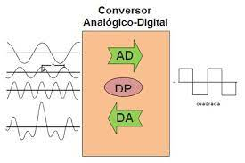

Gracias a las señales PWM con Arduino y a la función analogWrite, es muy sencillo poder controlar el voltaje que sale de un pin. Son las llamadas salidas analógicas. Las salidas PWM con Arduino son muy útiles, por ejemplo, si quieres controlar la velocidad de un motor eléctrico, controlar el brillo de un LED o controlar un servomotor con Arduino. Las señales PWM con Arduino son muy fáciles de utilizar gracias a la función analogWrite(). En este tutorial aprenderás todo lo necesario para poder utilizar señales PWM con Arduino.
PINES ANALOGICOS DE SALIDA

Pin PWM

Salidas analógicas PWM
Una señal analógica es aquella que puede tomar diferentes valores. Su forma característica es conocida como señal de onda senoidal y las representaciones se realizan en el dominio del tiempo. La función principal de las salidas analógicas es entregar una señal de control que le dará funcionalidad a un circuito electrónico que será el encargado de cumplir con las funciones que el usuario requiera.

Salidas digitales en Arduino
En electrónica se suele utilizar un convertidor de digital a analógico (DAC) para transformar la señal digital en analógica, sin embargo arduino no incluye un DAC dentro de los circuitos que forman la placa, con lo cual no son capaces de producir salidas analógicas. Sin embargo son capaces de producir una señal analógica modulada por pulso PWM. En Arduino UNO no tenemos una señal analógica pura, es decir, se utiliza la técnica PWM.

QUE ES PWM
PWM (modulación por ancho o de pulso) es un tipo de señal de voltaje utilizada para enviar información o para modificar la cantidad de energía que se envía a una carga. Este tipo de señales es muy utilizada en circuitos digitales que necesitan emular una señal analógica, en las cuales se les cambia el ancho relativo respecto al período de la misma, el resultado de este cambio es llamado ciclo de trabajo y sus unidades están representadas en términos de porcentaje.